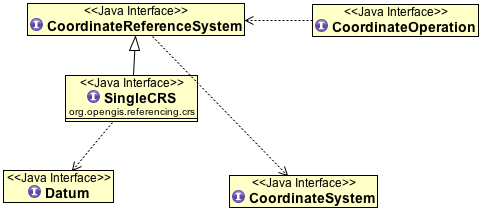
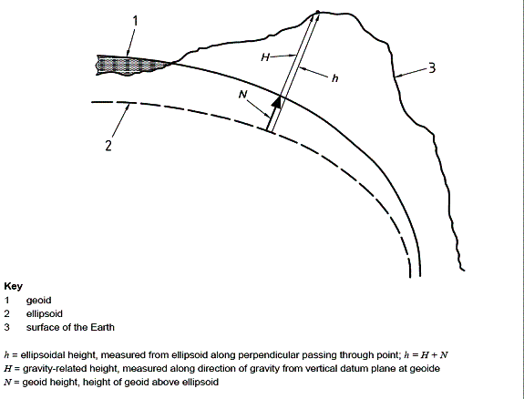
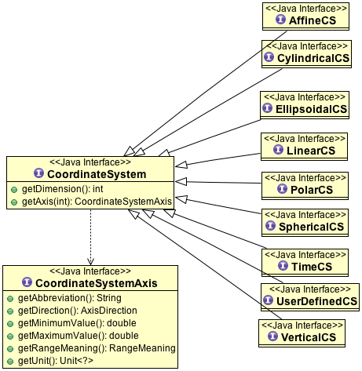
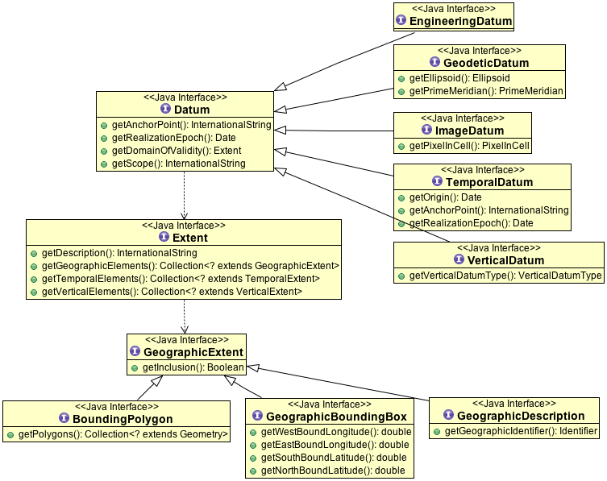

Coordinate Systems¶
In the previous page we saw that each geometry had an associated CoordinateReferenceSystem. This page introduces some coordinate system concepts along with the interfaces used, and may be interested as background reading.
Related:
- http://en.wikibooks.org/wiki/Coordinate_Reference_Systems_and_Positioning
- http://www.epsg.org/ (see Guidance note 7.2 for information on map projection and datum transformations)
- http://www.geog.ubc.ca/courses/klink/gis.notes/ncgia/toc.html
- http://proj.osgeo.org/ (has some links to resources on this subject)
Some Geodetic Concepts¶
Geodesy is the applied science that aims to determine the size and shape of the earth. In a more practical and local sense, this may be understood to mean the determination of the relative positions of points on or near the earth’s surface. Survey measurements and techniques are the means to achieve this.
The most accurate reference shape approximating the earth is the geoid, a surface that is defined as having equal gravity potential and being approximately at mean sea level. The gravity vector at mean sea level is everywhere perpendicular to this surface. Topographic heights (H) are typically expressed relative to the geoid. But due to the irregular mass distribution in the earth’s interior the geoid has an irregular shape. This makes it difficult to use in calculations for horizontal spatial data.
To facilitate easier spatial calculations the geoid is approximated by the nearest regular body, an oblate ellipsoid, in which the oblateness corresponds to the flattening of the physical earth at the poles due to the earth’s rotation. The ellipsoid is a reasonably accurate approximation of the geoid, the geoid undulating around the ellipsoid’s surface with variations in the order of several tens of metres.
The ellipsoid forms the basis of the best-known type of coordinate reference system: the Geographic CRS. The position of a point relative to the ellipsoid is expressed by means of geographic coordinates: geodetic latitude and geodetic longitude. The height above the ellipsoid (h) is an inseparable element of a geographic 3D coordinate tuple. Note however that ellipsoidal height (h) differs from “topographic” heights related to the geoid (H) by the amount by which the geoid undulates relative to the ellipsoid (see figure below). Geodetic science distinguishes several different types of gravity-related heights (H), differentiated by the assumptions made about the earth’s gravity field. The differences between these types of gravity-related height are beyond the scope of the ISO 19111 Standard.
There is not just one ellipsoid. An ellipsoid is a matter of choice, and therefore many choices are possible. The size and shape of an ellipsoid was traditionally chosen such that the surface of the geoid is matched as closely as possible locally, e.g. in a country. A number of global best-fit ellipsoids are now available. An association of an ellipsoid with the earth is made through the definition of the size and shape of the ellipsoid and the position and orientation of this ellipsoid with respect to the earth. Collectively this choice is captured by the concept of “geodetic datum”. A change of size, shape, position or orientation of an ellipsoid will result in a change of geographic coordinates of a point and be described as a different geodetic datum. Conversely geographic coordinates are unambiguous only when associated with a geodetic datum.
Map projections¶
A Geographic CRS is not suitable for mapmaking on a planar surface, because it describes geometry on a curved surface. It is impossible to represent such geometry in a Euclidean plane without introducing distortions. The need to control these distortions has given rise to the development of the science of map projections. Although some map projections can be represented as a geometric process, in general a map projection is a set of formulae that converts geodetic latitude and longitude to plane (map) coordinates. Height plays no role in this process, which is entirely two-dimensional. The same map projection can be applied to many geographic CRSs, resulting in many projected CRSs each of which is related to the same geodetic datum as the geographic CRS on which it was based.
Some common map projections include the Mercator, Transverse Mercator, Lambert Conformal Conic and Stereographic. The formulae for these map projections can be used to convert (latitude, longitude) coordinates from a geographic CRS to planar (x,y) coordinates in a projected CRS. Parameters used for the map projections (eg. Central Meridian) are chosen to minimize distortion for the area of study.
OpenGIS Concepts¶
The Open GIS Consortium (OGC) is a non-profit association that develops standards for GIS. These are mainly standards for exchanging geodata and geoobjects.
Some specifications related to coordinate systems have also been created.
01-009 Coordinate Transformation Services 1.0 (CTS) 2001
http://portal.opengeospatial.org/files/?artifact_id=999
Older document from 2001, an implementation specification (very detailed and ready-to-use).
04-046r3 Spatial Referencing by Coordinates 2.0
https://portal.opengeospatial.org/files/?artifact_id=6716
Newer document is an abstract specification - a conceptual framework rather than a specification to be compliant with.
The contents of both documents are somewhat similar. They define vocabulary related to geographic coordinate systems, coordinate transformations and such like, define a hierarchical structure and the parts of coordinate systems, the types of coordinate (reference) systems, the types of datums and so on.
The major difference between the documents is that the newer one distinguishes between “coordinate reference systems” (e.g. geographical CS as WGS84) and “coordinate systems” in the mathematical sense (e.g. cartesian coordinate systems).
Definitions:
- coordinate system
set of (mathematical) rules for specifying how coordinates are to be assigned to points
NOTE One coordinate system may be used in many coordinate reference systems.
- coordinate reference system
coordinate system which is related to the real world by a datum.
NOTE 1: For geodetic and vertical datums, it will be related to the Earth. NOTE 2: The geometric properties of a coordinate space determine how distances and angles between points are calculated from the coordinates.
For example, in an ellipsoidal (2D) space distances are defined as curves on the surface of the ellipsoid, whereas in a Euclidean plane as used for projected CRS distance is the length of a straight line between two points. The mathematical rules that determine distances and angles are calculated from coordinates and vice versa are comprised in the concept of coordinate system.
- compound coordinate reference system
coordinate reference system using at least two independent coordinate reference systems describing horizontal positions and/or vertical positions and/or temporal positions or positions.
NOTE: It cannot contain another compound coordinate reference system.
- datum
- parameter or set of parameters that determine the location of the origin, the orientation and the scale of a coordinate reference system
- geodetic datum
- datum describing the relationship of a 3D or 2D coordinate system to the Earth NOTE In most cases, the geodetic datum includes an ellipsoid definition.
- Coordinate
- One of a sequence of N numbers designating the position of a point in N-dimensional space. In a coordinate reference system, the coordinate numbers must be qualified by units.
- geodetic coordinates
- coordinates defined in a geocentric, geographic (2D or 3D) or projected coordinate reference system.
- cartesian coordinate system
coordinate system which gives the position of points relative to N mutually- perpendicular straight axes.
NOTE In the context of geospatial coordinates the maximum values of N is three.
- ellipsoid
surface formed by the rotation of an ellipse about an axis
NOTE: Sometimes the alternative word “spheroid” is used in geodetic or survey practice to express the same concept. Although mathematically speaking incorrect the more common term in geodetic or survey practice is “ellipsoid”. An alternative term used in geodetic practice is “reference ellipsoid”.
- flattening
ratio of the difference between the semi-major (a) and semi-minor axis (b) of an ellipsoid to the semi-major axis; f = (a-b)/a
NOTE Sometimes inverse flattening 1/f = a/(a-b) is given instead of flattening; 1/f is also known as reciprocal flattening.
- semi-major axis
- semi-diameter of the longest axis of a reference ellipsoid. NOTE This equates to the semi-diameter of the reference ellipsoid measured in its equatorial plane
- semi-minor axis
- semi-diameter of the shortest axis of a reference ellipsoid NOTE The shortest axis coincides with the rotation axis of the reference ellipsoid and therefore contains both poles.
- geographic coordinate reference system
coordinate reference system using an ellipsoidal coordinate system and based on an ellipsoid that approximates the shape of the Earth
NOTE A geographic coordinate system can be 2D or 3D. In a 3D geographic coordinate system, the third dimension is height above the ellipsoid surface
- geocentric coordinate reference system
- 3-dimensional coordinate reference system with its origin at the (approximate) centre of the Earth.
- map projection
- conversion from a geodetic coordinate system to a planar surface
- prime meridian, zero meridian
- meridian from which the longitudes of other meridians are quantified
- coordinate conversion
change of coordinates, based on a one-to-one relationship, from one coordinate reference system to another based on the same datum
EXAMPLE Between geodetic and Cartesian coordinate systems or between geodetic coordinates and projected coordinates, or change of units such as from radians to degrees or feet to metres.
NOTE A conversion uses parameters which have specified values, not empirically determined values.
- coordinate transformation
computational process of converting a position given in one coordinate reference system into the corresponding position in another coordinate reference system
NOTE A coordinate transformation can require and use the parameters of the ellipsoids associated with the source and target coordinate
- projected coordinate reference system
two-dimensional coordinate system resulting from a map projection.
NOTE Projected coordinate reference system is derived from a 2D geographic coordinate reference system by applying a parameterised coordinate transformation known as a “map projection”. Projected coordinate reference system commonly uses a Cartesian coordinate system.
- latitude, geodetic latitude, ellipsoidal latitude
- angle from the equatorial plane to the perpendicular to the ellipsoid through a given point, northwards treated as positive.
- longitude, geodetic longitude, ellipsoidal longitude
- angle from the prime meridian plane to the meridian plane of the given point, eastward treated as positive.
- prime meridian, zero meridian
- meridian from which the longitudes of other meridians are quantified.
- reference ellipsoid
- ellipsoid used as the best local or global approximation of the surface of the geoid.
- ellipsoidal (geodetic) height
- distance of a point from the ellipsoid measured along the perpendicular from the ellipsoid to the point itself, taken as positive upwards or outside the ellipsoid.
- ellipsoidal (geodetic) coordinate system
- coordinate system in which position is specified by geodetic latitude, geodetic longitude and ( in the three dimensional case) ellipsoidal height, associated with one or more geographic coordinate reference systems.
- geoid
- level surface which best fits mean sea level either locally or globally.
- gravity related height
- height dependent on the earth’s gravity field.
- mean sea level
- average level of the surface of the sea over all stages of tide and seasonal variations.
- meridian
- intersection of an ellipsoid by a plane containing the semi-minor axis of the ellipsoid.
- prime meridian
- meridian from which longitudes of other meridians are quantified.
- temporal reference system
- reference system against which time is measured.
- temporal datum
- datum defining the origin of a temporal reference system.
- time coordinate system
- one-dimensional coordinate system containing a time axis used in temporal reference systems to describe the temporal position of a point in the specified time units from a specified temporal datum.
- vertical coordinate reference system
- one-dimensional coordinate reference system used for gravity-related height or depth measurements.
- vertical datum
- datum describing the relation of gravity-related heights or depths to the Earth.
Coordinate Reference Systems¶
A coordinate reference system consists of one coordinate system that is related to the earth through one datum. The coordinate system is composed of a set of coordinate axes with specified units of measure. This concept implies the mathematical rules that define how coordinate values are calculated from distances, angles and other geometric elements and vice versa.
A datum specifies the relationship of a coordinate system to the earth, thus ensuring that the abstract mathematical concept “coordinate system” can be applied to the practical problem of describing positions of features on or near the earth’s surface by means of coordinates. The resulting combination of coordinate system and datum is a coordinate reference system. Each datum subtype can be associated with only specific types of coordinate reference systems. The datum implicitly (occasionally explicitly) contains the values chosen for the set parameters that represent the degrees of freedom of the coordinate system, in the figure below. A datum therefore implies a choice regarding the approximate origin and orientation of the coordinate system.
Principal sub-types of coordinate reference systems
Geodetic survey practice usually divides coordinate reference systems into a number of sub-types. The common classification criterion for sub-typing of coordinate reference systems can be described as the way in which they deal with earth curvature. This has a direct effect on the portion of the earth?s surface that can be covered by that type of CRS with an acceptable degree of error. Thus the following principal sub-types of coordinate reference system are distinguished:
- Geocentric. Type of coordinate reference system that deals with the earth?s curvature by taking the 3D spatial view, which obviates the need to model the earth?s curvature. The origin of a geocentric CRS is at the approximate centre of mass of the earth.
- Geographic. Type of coordinate reference system based on an ellipsoidal approximation of the geoid. This provides an accurate representation of the geometry of geographic features for a large portion of the earth?s surface. Geographic coordinate reference systems can be 2D or 3D. A 2D Geographic CRS is used when positions of features are described on the surface of the reference ellipsoid; a 3D geographic CRS is used when positions are described on, above or below the reference ellipsoid.
- Projected. Type of coordinate reference system that is based on an approximation of the shape of the earths surface by a plane. The distortion that is inherent to the approximation is carefully controlled and known. Distortion correction is commonly applied to calculated bearings and distances to produce values that are a close match to actual field values.
- Engineering. Type of coordinate reference system that is that is used only in a contextually local sense. This sub-type is used to model two broad categories of local coordinate reference systems:earth-fixed systems, applied to engineering activities on or near the surface of the earth; coordinates on moving platforms such as road vehicles, vessels, aircraft or spacecraft. Earth-fixed Engineering CRSs are commonly based on a simple flat-earth approximation of the earth?s surface, and the effect of earth curvature on feature geometry is ignored: calculations on coordinates use simple plane arithmetic without any corrections for earth curvature. The application of such Engineering CRSs to relatively small areas and “contextually local” is in this case equivalent to “spatially local”. Engineering CRSs used on moving platforms are usually intermediate coordinate reference systems that are computationally required to calculate geodetic coordinates. These coordinate reference systems are subject to all the motions of the platform with which they are associated. In this case “contextually local” means that the associated coordinates are meaningful only relative to the moving platform. Earth curvature is usually irrelevant and is therefore ignored. In the spatial sense their applicability may extend from the immediate vicinity of the platform (e.g. a moving seismic ship) to the entire earth (e.g. in space applications). The determining factor is the mathematical model deployed in the positioning calculations. Transformation of coordinates from these moving Engineering CRSs to earth-referenced coordinate reference systems involves time-dependent coordinate operation parameters.
- Vertical. Type of coordinate reference system used for the recording of heights or depths. Vertical CRSs make use of the direction of gravity to define the concept of height or depth, but its relationship with gravity may not be straightforward. By implication therefore, ellipsoidal heights (h) cannot be captured in a vertical coordinate reference system: ellipsoidal heights cannot exist independently, but only as an inseparable part of a 3D coordinate tuple defined in a geographic 3D coordinate reference system.
- Temporal. Used for the recording of time in association with any of the listed spatial coordinate reference systems.
Additional sub-types of coordinate reference systems
In addition to the principal sub-types, so called because they represent concepts generally known in geodetic practice, two more sub-types have been defined to permit modelling of certain relationships and constraints that exist between the principal sub-types. These additional sub-types are:
- Compound coordinate reference system
- Derived coordinate reference system
Compound coordinate reference system
The traditional separation of horizontal and vertical position has resulted in coordinate reference systems that are horizontal (2D) in nature and vertical (1D). It is established practice to combine the horizontal coordinates of a point with a height or depth from a different coordinate reference system. The coordinate reference system to which these 3D coordinates are referenced combines the separate horizontal and vertical coordinate reference systems of the horizontal and vertical coordinates. Such a coordinate system is called a compound coordinate reference system (Compound CRS). It consists of an ordered sequence of the two or more single coordinate reference systems.
A Compound CRS is thus a coordinate reference system that combines two or more coordinate reference systems, none of which can itself be compound. In general, a Compound CRS may contain any number of axes. The Compound CRS contains an ordered set of coordinate reference systems and the tuple order of a compound coordinate set shall follow that order, while the subsets of the tuple, described by each of the composing coordinate reference systems, follow the tuple order valid for their respective coordinate reference systems.
For spatial coordinates, a number of constraints exist for the construction of Compound CRSs. For example, the coordinate reference systems that are combined should not contain any duplicate or redundant axes.
Derived coordinate reference system
Some coordinate reference systems are defined by applying a coordinate conversion to another coordinate reference system. Such a coordinate reference system is called a Derived CRS and the coordinate reference system it was derived from by applying the conversion is called the Source or Base CRS. A coordinate conversion is an arithmetic operation with zero or more parameters that have defined values. The Source CRS and Derived CRS have the same Datum. The best-known example of a Derived CRS is a Projected CRS, which is always derived from a source Geographic CRS by applying the coordinate conversion known as a map projection.
In principle, all sub-types of coordinate reference system may take on the role of either Source or Derived CRS with the exception of a Geocentric CRS and a Projected CRS. The latter is modelled as an object class under its own name, rather than as a general Derived CRS of type ?projected?. This has been done to honour common practice, which acknowledges Projected CRSs as one of the best known types of coordinate reference systems.
Coordinate Systems¶
The coordinates of points are recorded in a coordinate system. A coordinate system is the set of coordinate system axes that spans the coordinate space. This concept implies the set of mathematical rules that determine how coordinates are associated with invariant quantities such as angles and distances. In other words, a coordinate system implies how coordinates are calculated from geometric elements such as distances and angles and vice versa. The calculus required to derive angles and distances from point coordinates and vice versa is in a map plane is simple Euclidean 2D arithmetic. To do the same on the surface of an ellipsoid (curved 2D space) involves more complex ellipsoidal calculus.
One coordinate system may be used by multiple coordinate reference systems. Its axes can be spatial, temporal, or mixed. A coordinate system is composed of an ordered set of coordinate system axes, the number of axes being equal to the dimension of the space of which it describes the geometry. Coordinates in coordinate tuples shall be supplied in the same order as the coordinate axes are defined. The dimension of the coordinate space, the names, the units of measure, the directions and sequence of the axes are all part of the Coordinate System definition. The number of coordinates in a tuple and consequently the number of coordinate axes in a coordinate system shall be equal to the number of coordinate axes in the coordinate system. Coordinate systems are divided into subtypes by the geometric properties of the coordinate space spanned and the geometric properties of the axes themselves (straight or curved; perpendicular or not). Certain subtypes of coordinate system can only be used with specific subtypes of coordinate reference system.
| CoordainteSystem | Description | For CRS |
| Cartesian | 1-, 2-, or 3-dimensional coordinate system. It gives the position of points relative to orthogonal straight axes in the 2- and 3-dimensional cases. In 1-dimensional case, it contains a single straight coordinate axis. In the multi-dimensional case, all axes shall have the same unit of measure. | Geocentric Projected Engineering Image |
| oblique Cartesian | 2- or 3-dimensional coordinate system with straight axes that are not necessarily orthogonal. | Engineering Image |
| ellipsoidal | 2- or 3-dimensional coordinate system in which position is specified by geodetic latitude, geodetic longitude and (in the three-dimensional case) ellipsoidal height, associated with one or more geographic coordinate reference systems.Geographic | Engineering |
| spherical | 3-dimensional coordinate system with one distance, measured from the origin, and two angular coordinates. Not to be confused with an ellipsoidal coordinate system based on an ellipsoid ?degenerated? into a sphere | Geocentric Engineering |
| cylindrical | 3-dimensional coordinate system consisting of a polar coordinate system extended by a straight coordinate axis perpendicular to the plane spanned by the polar coordinate system. | Engineering |
| polar | 2-dimensional coordinate system in which position is specified by distance to the origin and the angle between the line from origin to point and a reference direction. | Engineering |
| vertical | 1-dimensional coordinate system used to record the heights (or depths) of points dependent on the Earth?s gravity field. An exact definition is deliberately not provided as the complexities of the subject fall outside the scope of this specification. | Vertical Engineering |
| linear | 1-dimensional coordinate system that consists of the points that lie on the single axis described. The associated ordinate is the distance from the specified origin to the point along the Axis. Example: usage of the line feature representing a road to describe points on or along that road. | Engineering |
| temporal | dimensional coordinate system containing a single time axis and used to describe the temporal position of a point in the specified time units from a specified time origin. | Temporal |
Coordinate system axis
A coordinate system is composed of an ordered set of coordinate system axes. Each of its axes is completely characterised by a unique combination of axis name, axis abbreviation, axis direction and axis unit of measure. The concept of coordinate axis requires some clarification. Consider an arbitrary x, y, z coordinate system. The x-axis may be defined as the locus of points with y = z = 0. This is easily enough understood if the x, y, z coordinate system is a Cartesian system and the space it describes is Euclidean. It becomes a bit more difficult to understand in the case of a strongly curved space, such as the surface of an ellipsoid, its geometry described by an ellipsoidal coordinate system (2D or 3D). Applying the same definition by analogy to the curvilinear latitude and longitude coordinates the latitude axis would be the equator and the longitude axis would be the prime meridian, which is not a satisfactory definition. Bearing in mind that the order of the coordinates in a coordinate tuple must be the same as the defined order of the coordinate axes, the i-th coordinate axis of a coordinate system is defined as the locus of points for which all coordinates with sequence number not equal to ?i?, have a constant value locally (whereby i = 1 ...n, and n is the dimension of the coordinate space). It will be evident that the addition of the word “locally” in this definition apparently adds an element of ambiguity and this is intentional. However, the definition of the coordinate parameter associated with any axis must be unique. The coordinate axis itself should not be interpreted as a unique mathematical object, the associated coordinate parameter should.
Example: Geodetic latitude is defined as the “Angle from the equatorial plane to the perpendicular to the ellipsoid through a given point, northwards usually treated as positive”. However, hen used in an ellipsoidal coordinate system the geodetic latitude axis will be described as pointing “north”. In two different points on the ellipsoid the direction “north” will be a spatially ifferent direction, but the concept of latitude is the same.
Furthermore the specified direction of the coordinate axes is often only approximate; two geographic coordinate reference systems will make use of the same ellipsoidal coordinate system. These coordinate systems are associated with the earth hrough two different geodetic datums, which may lead to the two systems being slightly rotated w.r.t. each other.
Usage of coordinate system axis names is constrained by geodetic custom in a number of cases, depending mainly on the coordinate reference system type. These constraints are shown in table below. This constraint works in two directions; for example the names “geodetic latitude” and “geodetic longitude” shall be used to designate the coordinate axis names associated with a geographic coordinate reference system. Conversely, these names shall not be used in any other context.
| CS | CRS | Permitted coordinate system axis names |
|---|---|---|
| Cartesian | Geocentric | Geocentric X, Geocentric Y, Geocentric Z |
| Spherical | Geocentric | Spherical Latitude, Spherical Longitude, Geocentric Radius |
| Ellipsoidal | Geographic | Geodetic Latitude, Geodetic Longitude, Ellipsoidal height (if 3D) |
| Vertical | Vertica | Gravity-related height |
| Vertical | Vertical | Depth |
| Cartesian | Projected | Easting, Northing |
| Cartesian | Projected | Westing, Southing |
Datum¶
A datum specifies the relationship of a coordinate system to the earth or, in some applications to an Engineering CRS, to a moving platform, thus creating a coordinate reference system. A datum can be used as the basis for one-, two- or three-dimensional systems.
Many subtypes of datum are specified: geodetic, vertical, engineering etc. Each datum subtype can be associated only with specific types of coordinate reference systems. A geodetic datum is used with three dimensional or horizontal (two-dimensional) coordinate reference systems, and requires an ellipsoid definition and a prime meridian definition. It is used to describe large portions of the earth?s surface up to the entire earth’s surface. A vertical datum can only be associated with a vertical coordinate reference system. Image datum and engineering datum are both used in a local context only: to describe the origin of an image and the origin of an engineering (or local) coordinate reference system.
Vertical Datum
Further sub-typing is required to describe vertical datums adequately. The following types of vertical datum are distinguished:
- Geoidal. The zero value of the associated (vertical) coordinate system axis is defined to approximate a constant potential surface, usually the geoid. Such a reference surface is usually determined by a national or scientific authority and is then a well-known, named datum. This is the default vertical datum type, because it is the most common one encountered.
- Depth. The zero point of the vertical axis is defined by a surface that has meaning for the purpose for which the associated vertical measurements are used. For hydrographic charts, this is often a predicted nominal sea surface (that is, without waves or other wind and current effects) which occurs at low tide. Examples are Lowest Astronomical Tide (LAT) and Lowest Low Water Springs (LLWS). A different example is a sloping and undulating River Datum defined as the nominal river water surface occurring at a quantified river discharge.
- Barometric. A vertical datum is of type “barometric” if atmospheric pressure is the basis for the definition of the origin. Atmospheric pressure may be used as the intermediary to determine height (barometric height determination) or it may be used directly as the vertical coordinate, against which other parameters are measured. The latter case is applied routinely in meteorology.
- Other surface. In some cases, for example oil exploration and production, geological features, such as the top or bottom of a geologically identifiable and meaningful subsurface layer, are sometimes used as a vertical datum. Other variations to the above three vertical datum types may exist and are all bracketed in this category.
Prime Meridian
A prime meridian defines the origin from which longitude values are specified. Most geodetic datums use Greenwich as their prime meridian. A prime meridian description is not needed for any datum type other than geodetic, or if the datum type is geodetic and the prime meridian is Greenwich. The prime meridian description is mandatory if the datum type is geodetic and its prime meridian is not Greenwich.
Ellipsoid
An ellipsoid is defined that approximates the surface of the geoid. Because of the area for which the approximation is valid ? traditionally regionally, but with the advent of satellite positioning often globally ? the ellipsoid is typically associated with Geographic and Projected CRSs. An ellipsoid specification shall not be provided if the datum type not geodetic.
One ellipsoid must be specified with every geodetic datum, even if the ellipsoid is not used computationally. The latter may be the case when a Geocentric CRS is used, e.g., in the calculation of satellite orbit and ground positions from satellite observations. Although use of a Geocentric CRS apparently obviates the need of an ellipsoid, the ellipsoid usually played a role in the determination of the associated geodetic datum. Furthermore one or more Geographic CRSs may be based on the same geodetic datum, which requires the correct ellipsoid the associated with any given geodetic datum. An ellipsoid is defined either by its semi-major axis and inverse flattening, or by its semimajor axis and semi-minor axis. For some applications, for example small-scale mapping in atlases, a spherical approximation of the geoid?s surface is used, requiring only the radius of the sphere to be specified
Source for the above definitions: Spatial Referencing by Coordinates 2.0. Slightly edited.